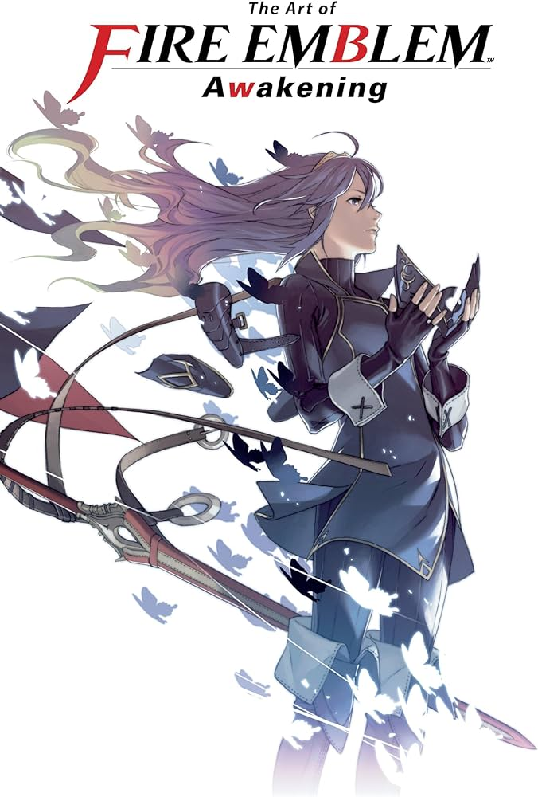
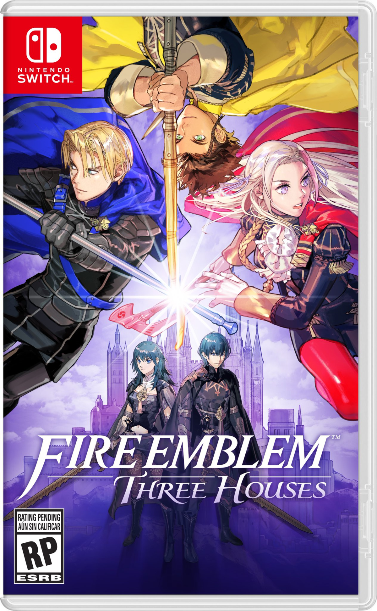

Fire Emblem: Shadow Dragon and the Blade of Light
Consola: NES Fecha de lanzamiento: 20 de abril de 1990
Fire Emblem Gaiden
Consola: NES Fecha de lanzamiento: 14 de marzo de 1992
Fire Emblem: Mystery of the Emblem
Consola: SNES Fecha de lanzamiento: 21 de enero de 1994
Fire Emblem: Genealogy of the Holy War
Consola: SNES Fecha de lanzamiento: 14 de mayo de 1996
Fire Emblem: Thracia 776
Consola: SNES Fecha de lanzamiento: 1 de septiembre de 1999
Fire Emblem: The Binding Blade
Consola: Game Boy Advanced Fecha de lanzamiento: 29 de marzo del 2002
Fire Emblem: The Blazing Blade
Consola: Game Boy Advanced Fecha de lanzamiento: 25 de abril del 2003
Fire Emblem: The Sacred Stones
Consola: Game Boy Advanced Fecha de lanzamiento: 7 de octubre del 2004
Fire Emblem: Path of Radiance
Consola: Nintendo GameCube Fecha de lanzamiento: 20 de abril del 2005
Fire Emblem: Radiant Dawn
Consola: Wii Fecha de lanzamiento: 22 de febrero del 2007

Fire Emblem: Shadow Dragon
Consola: DS Fecha de lanzamiento: 7 de agosto del 2008
Fire Emblem: New Mystery of the Emblem, Heroes of Light and Shadow
Consola: DS Fecha de lanzamiento: 15 de julio del 2010
Fire Emblem: Awakening
Consola: 3DS Fecha de lanzamiento: 19 de abril de 2012
Fire Emblem Fates
Este se divide en 3 versiones: Conquest, Birthright y Revelation Consola: 3DS Fecha de lanzamiento: 25 de junio de 2015
Fire Emblem Echoes: Shadows of Valentia
Consola: 3DS Fecha de lanzamiento: 20 de abril de 2017
Fire Emblem: Three Houses
Consola: Nintendo Switch Fecha de lanzamiento: 26 de julio de 2019
Fire Emblem Engage
Consola: Nintendo Switch Fecha de lanzamiento: 20 de enero de 2023